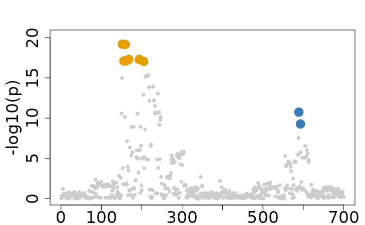
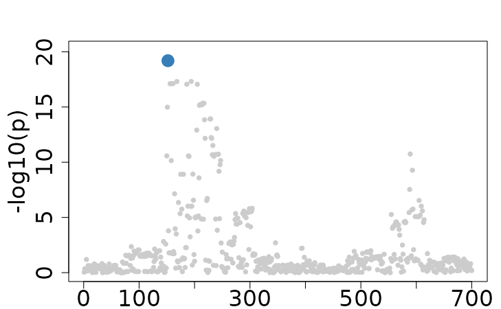

Single-trait Fine-mapping with FineBoost
Source:vignettes/FineBoost_Special_Case.Rmd
FineBoost_Special_Case.RmdThis vignette demonstrates how to perform single-trait fine-mapping
analysis using FineBoost, a specialized single-trait version of
ColocBoost, with both individual-level data and summary statistics.
Specifically focusing on the 2nd trait with 2 causal variants (194 and
589) from the Ind_5traits and Sumstat_5traits
datasets included in the package.
1. Fine-mapping with individual-level data
In this section, we demonstrate how to perform fine-mapping using
individual-level genotype (X) and phenotype
(Y) data. This approach uses raw data directly to identify
causal variants.
# Load example data
data(Ind_5traits)
X <- Ind_5traits$X[[2]]
Y <- Ind_5traits$Y[[2]]
res <- colocboost(X = X, Y = Y)
#> Validating input data.
#> Starting gradient boosting algorithm.
#> Gradient boosting for outcome 1 converged after 44 iterations!
#> Performing inference on colocalization events.
#> No colocalization results in this region!
#> Extracting outcome-specific (uncolocalized) results with pvalue_cutoff = 1e-05, and npc_outcome_cutoff = 0.2.
#> For each uCoS, keep the outcome-specific (uncolocalized) events that pvalue of variants for the outcome < 1e-05 and npc_outcome >0.2.
colocboost_plot(res)
2. Fine-mapping with summary statistics
This section demonstrates fine-mapping analysis using summary statistics along with a proper LD matrix.
# Load example data
data(Sumstat_5traits)
sumstat <- Sumstat_5traits$sumstat[[2]]
LD <- get_cormat(Ind_5traits$X[[2]])
res <- colocboost(sumstat = sumstat, LD = LD)
#> Validating input data.
#> Starting gradient boosting algorithm.
#> Gradient boosting for outcome 1 converged after 44 iterations!
#> Performing inference on colocalization events.
#> No colocalization results in this region!
#> Extracting outcome-specific (uncolocalized) results with pvalue_cutoff = 1e-05, and npc_outcome_cutoff = 0.2.
#> For each uCoS, keep the outcome-specific (uncolocalized) events that pvalue of variants for the outcome < 1e-05 and npc_outcome >0.2.
colocboost_plot(res)
3. LD-free fine-mapping with one causal variant assumption
In scenarios where LD information is unavailable, FineBoost can still perform fine-mapping under the assumption that there is a single causal variant. This approach is less computationally intensive but assumes that only one variant within a region is causal.
# Load example data
res <- colocboost(sumstat = sumstat)
#> Validating input data.
#> Warning in colocboost_validate_input_data(X = X, Y = Y, sumstat = sumstat, :
#> Providing the LD or X_ref for summary statistics data is highly recommended.
#> Without LD, only a single iteration will be performed under the assumption of
#> one causal variable per outcome. Additionally, the purity of CoS cannot be
#> evaluated!
#> Starting gradient boosting algorithm.
#> Running ColocBoost with assumption of one causal per outcome per region!
#> Performing inference on colocalization events.
#> No colocalization results in this region!
#> Extracting outcome-specific (uncolocalized) results with pvalue_cutoff = 1e-05.
#> Keep only uCoS with pvalue of variants for the outcome < 1e-05.
colocboost_plot(res)
Note: Weak learners SEL in FineBoost may capture
noise as putative signals, potentially introducing false positives to
our findings. To identify and filter spurious signals, we use a
fine-tuned threshold of
based on extensive simulations to balance sensitivity and specificity.
This threshold is set to 0.025 by default for ColocBoost when detect the
colocalization, but we suggested a less conservative threshold of 0.015
for FineBoost when performing single-trait fine-mapping analysis
(check_null_max = 0.015 as we suggested).